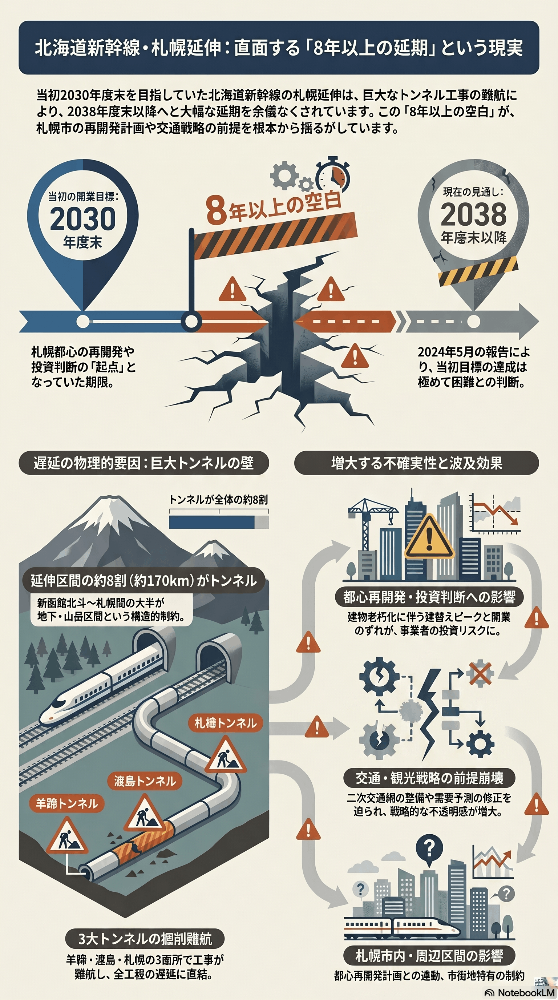

都心再開発・まちづくり
世代単位
北海道新幹線札幌延伸の遅延
札幌延伸の開業が大幅に遅れ、まちづくりの前提が揺らいでいる。

背景
新幹線札幌延伸を見据えて都心再開発が進められてきたが、トンネル工事の難航で開業が当初目標から大きく後ろ倒しになった。投資のタイミングや需要見込みの前提が崩れ、再開発・交通計画に影響する。
主要データ
| 当初目標の開業時期 | 2030年度末 |
|---|---|
| 見込まれる開業時期 | 2038年度末以降 |
事実
- 建設主体は2024年5月、当初目指していた2030年度末の開業は困難と国に報告した。
- 新函館北斗〜札幌の約8割をトンネルが占め、羊蹄・渡島・札樽の3トンネルで工事が難航し、開業は2038年度末以降になる見通しとされる。
解釈
新幹線を起点に組まれた都心再開発や交通戦略は、開業時期の前提が崩れると投資判断やまちづくりの工程に影響する。長期の不確実性をどう織り込むかが問われる。
提案
- 開業時期に過度に依存しないまちづくり工程への調整。
- 在来交通・観光戦略の自立的な強化。
検討体制・メンバー
国・鉄道運輸機構・JR北海道・北海道・札幌市の協議が前提となる。市の検討会には都心再開発の事業者、交通・観光の専門家、商業者を加え、開業時期に依存しすぎないまちづくりの工程を組み直すことが現実的。
AIノート
AIの貢献度は小。複数の開業シナリオに基づく需要・投資の試算や、リスク分析には役立つが、トンネル工事の遅延という物理的制約はAIでは解消できない。意思決定の前提整理を支える程度にとどまる。